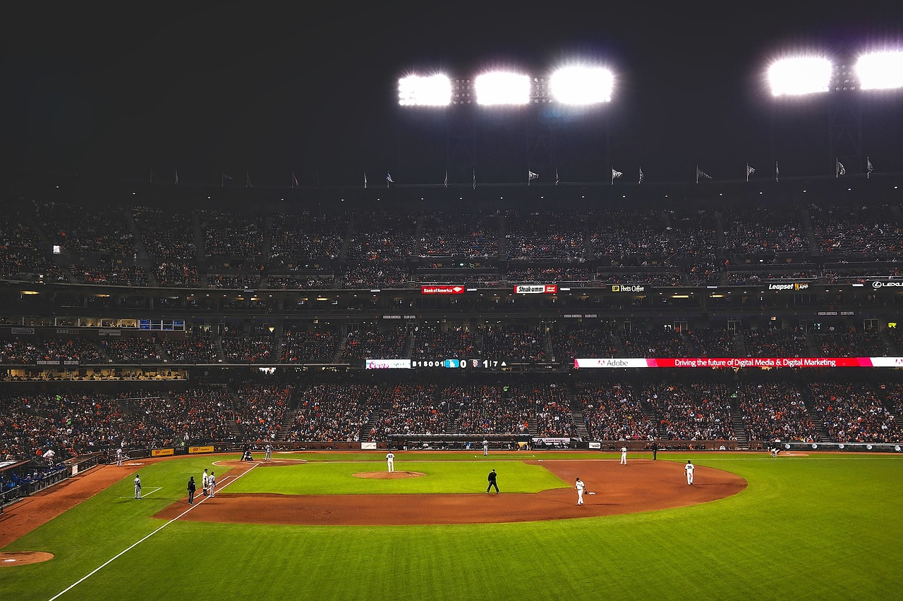
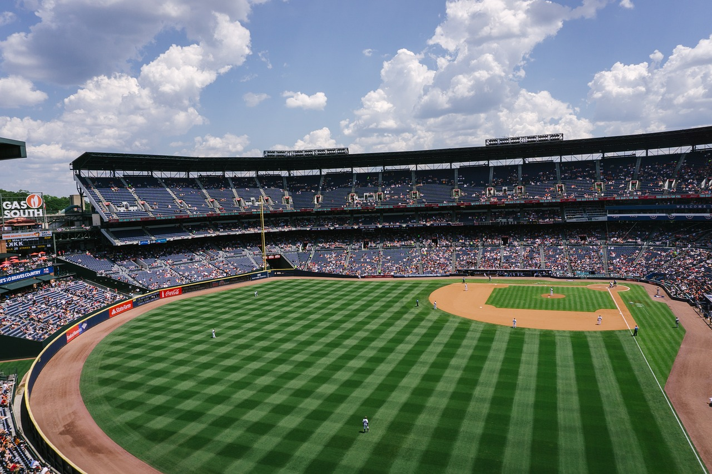

사직야구장(社稷野球場, Sajik Baseball Stadium)은 대한민국 부산광역시 동래구 사직동에 있는 야구장으로, 구덕야구장을 대신하여 1986년부터 한국 프로 야구 롯데 자이언츠의 홈구장으로 이용되고 있다. 부산광역시체육시설관리사업소가 소유하고 관리하였으나 2008년부터 5년간은 롯데 자이언츠 구단에 관리를 위탁하였다.
대한민국 부산광역시 동래구 사직동에 있는 야구장으로 1985년 10월에 완공되었으며 27,500석의 관람석이 있다. 구장 크기는 좌·우 펜스까지 95m, 중앙 펜스까지 118m이고, 펜스 높이가 펜스 상단 철망을 포함해서 4.8m다. 외형은 일본의 요코하마 스타디움을 모델로 하였다. 본래는 야구는 물론 축구나 럭비 등 다양한 종목의 경기가 함께 열릴 수 있는 다용도 종합경기장으로 지어졌다. 그래서 내야 관중석은 가변식이었으나, 지금은 야구 경기만 치르고 있어 내야석을 이동할 일은 없다. 외야 중앙 쪽에는 가로 33m, 세로 11m의 2개의 분리형 전광판이 설치되어 있었으며 이후 교체되었다. 2006년 인조잔디를 천연잔디로 교체하였으며 덕아웃을 반지하 형태로 개조하였다.[1] 2009년 9월 18일에는 시즌 최다 관중인 1,380,018명을 기록하여 2008년 9월 21일의 시즌 관중인 1,326,213명을 경신하면서 1995년 이래 13년간 이어져온 단일 구장의 최다 관중기록을 2시즌 연속 경신하였다. 2008년 인천SSG랜더스필드에 이어 국내에서는 두번째로 띠전광판을 신설하였다. 2009년 시즌부터는 외야석을 제외한 전 좌석이 지정석으로 바뀌면서 그간 논란이 많았던 신문지나 테이프 등으로 관람석을 선점하는 문제는 많이 사라졌다. 2014년 시즌전에는 대대적인 보수공사를 했다. 가장 큰 공사는 전광판이 가로 35m, 세로 15m의 메이저 리그 28개 구장이 쓰는 FHD전광판으로 교체 및 불펜의 이전, 펜스 역시 KBO가 개발한 안전 펜스로 바뀌었으며 이 공사로 좌석은 27,500석으로 줄어들었다. 2016년에는 구단측에서 조명탑 교체비용을 부담하는 대신에 구장명에 구단명을 사용하기로 부산광역시와 협의, 구장명이 부산 롯데 스타디움으로 변경될 예정이었으나 최종 무산되었다. 사직구장의 흙을 모두 교체하고 국내 야구단 최초로 LED조명을 설치하였다. 또 외야 좌측에 글램핑존을 신설, 좌석이 26,800석으로 줄어들었다. 2018년에는 구장 내 클럽하우스 보수 공사를 실시, 기존의 라커룸을 메이저리그식 원형 라커룸으로 재단장하였으며 실내 웨이트 트레이닝장 또한 보다 최신식 시설로 바꾸었다. 선수단 식당과 코치실, 감독실 등 내부 구조도 변경되었다. 그 외에 외야 좌석의 전면적인 교체를 실시하였다. 2019년 7월 1루 및 3루 덕아웃 난간을 높이는 공사를 실시했다. 2021년 원정팀 클럽하우스 개보수 및 샤워시설, 실내연습장, 투수 대기실 신설 등의 전반적인 구장 내부 개선 작업을 실시한다. 또한 구장 백스톱 거리를 기존의 21.68m에서 본래 규정인 18m까지 약 3m가량 당기는 공사를 진행하였다. 외야 펜스도 담장 상부에 설치되어있는 기존의 철제 기둥을 철거하고 바둑판 형태의 철제 그물로 새롭게 교체하였다. 2020 도쿄 올림픽으로 인해 리그가 중단되는 올림픽 브레이크 기간 동안 롯데 자이언츠 구단과 부산체육시설관리사업소측이 합심하여 구장 내 중계부스를 전면적으로 개보수하기로 결정했다. 기존의 중계부스 6개와 복도, 중계스태프 대기실을 전면 철거한 후 해당 위치에 가건물을 새롭게 세워 중계부스를 새롭게 구성하였다. 2022년 홈플레이트와 백스톱 간의 간격을 관중석 쪽으로 2.884m 당기고, 덕아웃도 홈플레이트 쪽으로 1.5m 당기는 공사를 실시했다. 기존의 낡고 비좁은 덕아웃의 공간을 넓히는 작업이 이루어졌으며 덕아웃 옆에 위치해 있었던 익사이팅 존을 없애고 불펜 투수들이 몸을 푸는 불펜을 그 자리에 새롭게 신설했다. 또한 외야 펜스 역시 4.8m에서 6m로 대폭 높아진다. 펜스 거리도 좌,우측 펜스는 기존 95m에서 95.8m로, 중앙 펜스는 기존 118m에서 121m로 늘어났다.
본래 다목적 경기장으로 건설되었기 때문에 축구, 럭비, 미식축구 등의 구기 종목 개최가 가능하며 실제로 1980년대와 1990년대 초반까지 고교 축구, 대학 미식축구 등의 아마추어 경기가 자주 열렸다.[10][11] 그리고 1988년 부산 연고의 K리그 클럽 대우 로얄즈가 현대 호랑이와의 4월 30일,[12] 6월 5일[13]K리그 정규리그 2경기를 사직구장에서 개최했고 그 외에 8월 13일 경기는 인조잔디 등의 이유로 럭키금성 황소가 수락하지 않아 동대문운동장으로 경기 장소를 변경하는 해프닝도 있었다.[14] 이후 2002년 한·일 월드컵과 부산 아시안 게임을 개최하기 위해 인근에 부산아시아드주경기장이 신축되었고 2000년대에는 오로지 야구장으로만 사용되고 있다.